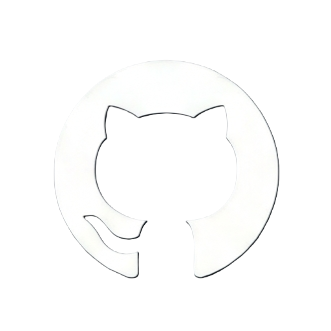

GitHub took Git — a powerful but unfriendly command-line tool built for the Linux kernel — and turned it into a social, visual, web-based home for software. This page walks through what it is, where it came from, how the core workflow actually works, and where to go to learn it properly.

Git itself and GitHub the company are two different things, separated by three years and one big usability gap.
Git was created in 2005 by Linus Torvalds to manage the Linux kernel's source code after a licensing dispute ended the kernel team's use of a proprietary tool called BitKeeper. Git was fast and powerful, but it lived entirely in the terminal — there was no easy way to browse code, discuss changes, or host a project online.
In October 2007, Chris Wanstrath and Tom Preston-Werner met at a Ruby on Rails meetup in San Francisco and started sketching a web interface for Git on weekends. PJ Hyett joined as a third co-founder in early 2008, and Scott Chacon rounded out the founding team. A private beta opened in January 2008 with a couple thousand users; GitHub launched publicly on April 10, 2008.
The company bootstrapped itself for four years on subscription revenue before taking its first outside investment — $100 million from Andreessen Horowitz in 2012, at the time its largest single investment ever. GitHub kept growing through open-source adoption, eventually reaching tens of millions of developers, until Microsoft acquired it in June 2018 for $7.5 billion in an all-stock deal — while keeping it operating independently.
Almost everything GitHub is built on top of this one loop. Understand this diagram and you understand 80% of how collaborative coding works today.
main = the stable, deployable line of code. A contributor branches off, makes isolated commits, opens a pull request for review, and once approved it's merged back — keeping main always working.
A project's folder, holding all files plus the complete history of every change ever made to them.
A parallel, isolated copy of the code where you can experiment safely without touching the main version.
A formal proposal to merge one branch into another — the core unit of code review and discussion on GitHub.
A tracked unit of work — a bug report, feature request, or task — that can be discussed and linked to commits.
Your own personal copy of someone else's repository, which you can change freely and later propose back.
Built-in automation that runs tests, builds, or deployments automatically whenever code changes.
GitHub stopped being just "Git with a UI" a long time ago — it's now the default place software gets built, reviewed, and shipped.
Projects like Linux, React, VS Code, and TensorFlow are developed in the open on GitHub, where anyone can read the code, report bugs, or submit fixes via pull requests.
Companies use private repositories, code review rules, and project boards to coordinate engineering teams and enforce quality before code reaches production.
GitHub Actions automatically runs test suites, builds containers, and deploys applications the moment code is pushed or a pull request is opened.
GitHub Pages turns a repository directly into a live website — used for project docs, portfolios, and blogs, often built with Jekyll.
Students and job seekers use public repositories as a visible coding portfolio, and contribute to open-source projects to build real-world experience.
GitHub Copilot, built into the platform, suggests code completions and now full pull requests, integrating AI directly into the everyday workflow.
Skip the random tutorials — these are maintained directly by GitHub or well-established platforms.
Official hands-on courses inside real repositories — covers the basics, Actions, Pages, and Copilot.
The official reference for repositories, branches, pull requests, and account setup.
A visual, in-browser sandbox for understanding branches, commits, and merges by actually doing them.
Written by Scott Chacon, GitHub co-founder — the definitive deep-dive into how Git itself works.
A widely used beginner course covering the full workflow from install to first pull request.
MIT's popular "tools" course includes a sharp, practical lecture specifically on Git internals.